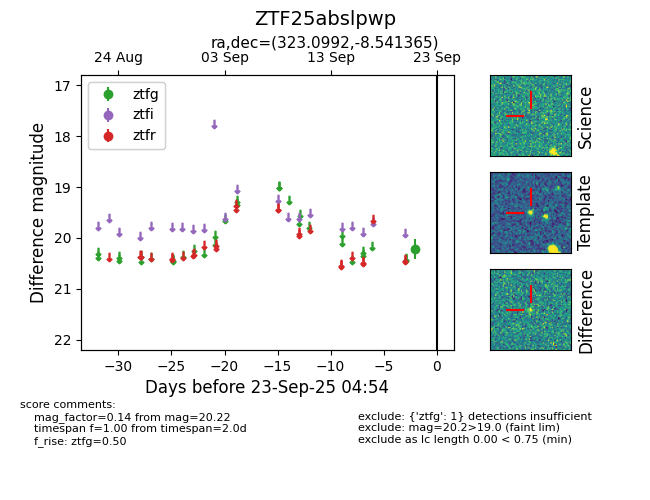

FINK: ZTF25abslpwp
Lasair: ZTF25abslpwp
ALeRCE: ZTF25abslpwp
ZTF25abslpwp (ztf,fink)
equatorial (ra, dec) = (323.0992,-8.54137)
galactic (l, b) = (44.8341,-39.51413)

last ztfg=20.22
1 ztfg detections